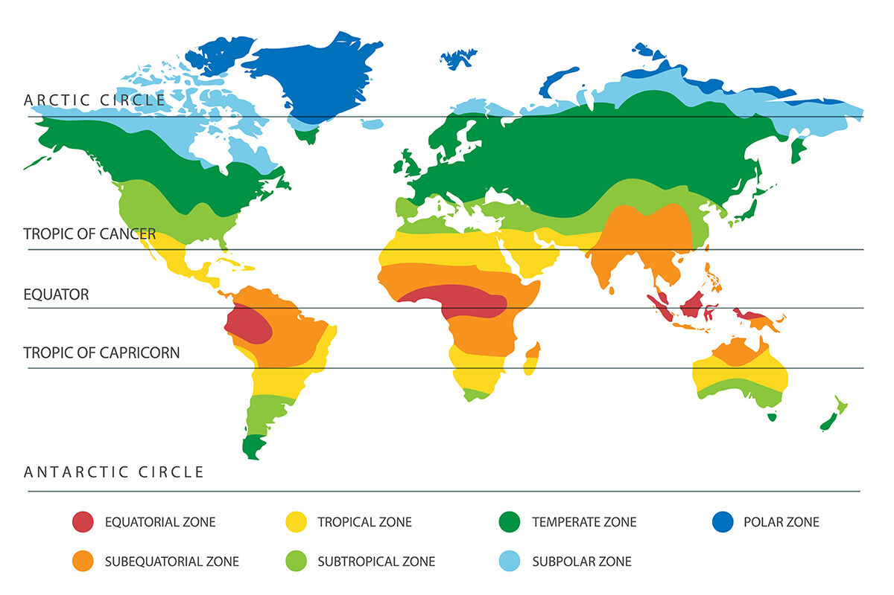

To Drive the Point Home
There are 10 features that help us define key similarities and differences among developing countries
An important caveat to remind yourself of is that when we compare nations, we use averages which inherently blur some important information
The textbook has their own 10. I’ll do my own 8:
- Physical and Human Resource Endowment
- Per Capita Incomes and GNI Levels Relative to the Rest of the World
- Climate
- Population Size, Distribution, and Growth
- Historical Role of International Migration
- International Trade Benefits
- Basic Scientific and Technology Research & Development Capabilities
- Efficacy of Domestic Institutions
Physical and Human Resource Endowment
- Current developed countries had plentiful natural resources in early global development
- Current developing countries are typically lacking natural resources
- If they do, resource extraction may be inefficient
- Or other developed nations may take advantage
- Skilled human resource endowment may be eve more stark
- Think about where the “best” universities in the world are concentrated
Relative Size of GNI per Capita
- Many people in developing countries are
- Not everyone but a significant proportion
- Individuals that are in developed countries had more economic freedom in their earlier stages
- Developed countries got ahead economically in their early stages
- They leveraged that accumulated wealth to extract resources
Climate Differences
- Most developing countries are in a tropical or sub-tropical climate
- Most developed contries have more temperate climates
- High head and humidity degrade soil and other natural goods
- There is also a higher prevalence of tropical diseases
- The tropics are great for life to take hold at its most basic stages

Population Size, Distribution, and Growth
- Population growth in developed countries was
International Migration
- Developed countries during development saw benefits from migration of labor
- People migrate from low-income countries to higher-income countries seeking a higher quality of life
- Developing countries suffer from Brain Drain
- “Skilled” workers leave their home countries and work in developed countries
- Individuals migrate for a better quality of life for themselves and their family
- Brain Drain causes slow growth in developing countries as they lose valuable human capital
International Trade
- Developed countries benefited from free trade early on
- Free Trade: Goods are imported/exported without obstacles like quotas or tariffs
- Now we are going through a drastic shift in attitudes toward Free Trade
- Brexit
- US Global Tariffs
Basic Scientific and Technology Research & Development Capabilities
- Developed countries got ahead early with their scientific and technological research, primarly due to their ability to invest in them
- Developing countries are lagging far behind in R&D
- Not necessarily their fault
Efficacy of Institutions
- Many developed countries began with and still have strong institutions
- Well defined property rights
- Well defined rule of law
- Strong judicial system
- Colonial powers established institutions that systemically created high inequality and extraction of resources to benefit foreign powers
- After countries obtain independence, self-governance is established but often through weak institutions and high possibility of corruption
Developed vs Developing Countries
Unfortunately, developed countries are not always a good template of growth
Historically, nations that are ahead got there through a not-so-great reason
However, given globalization and stronger international market participation growth is normalizing in the world